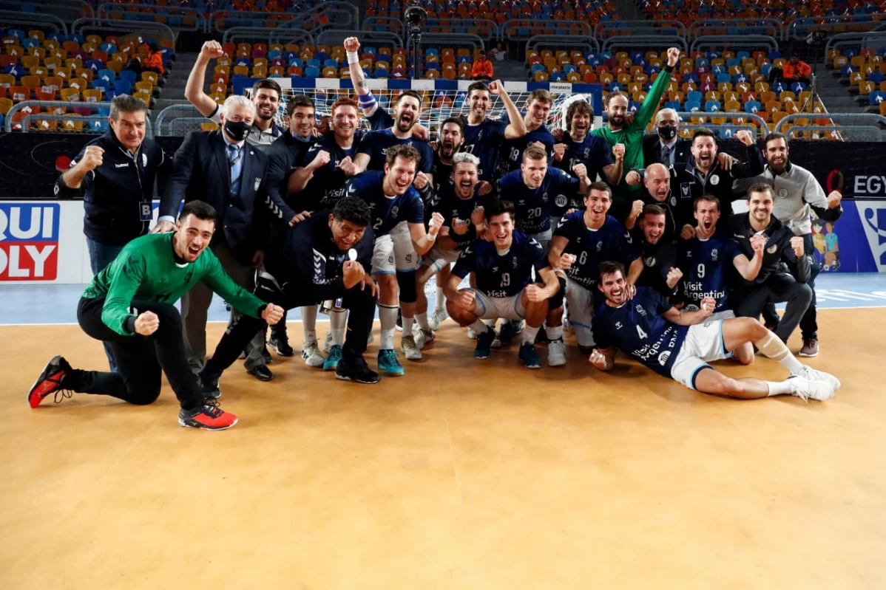

Argentina hizo historia en el Mundial de Handball: Los Gladiadores vencieron a Croacia y quedaron a un paso de los cuartos de final
El seleccionado masculino de handball se impuso 23-19 ante los balcánicos en El Cairo y tienen la gran chance de quedar entre los mejores 8 por primera vez.
